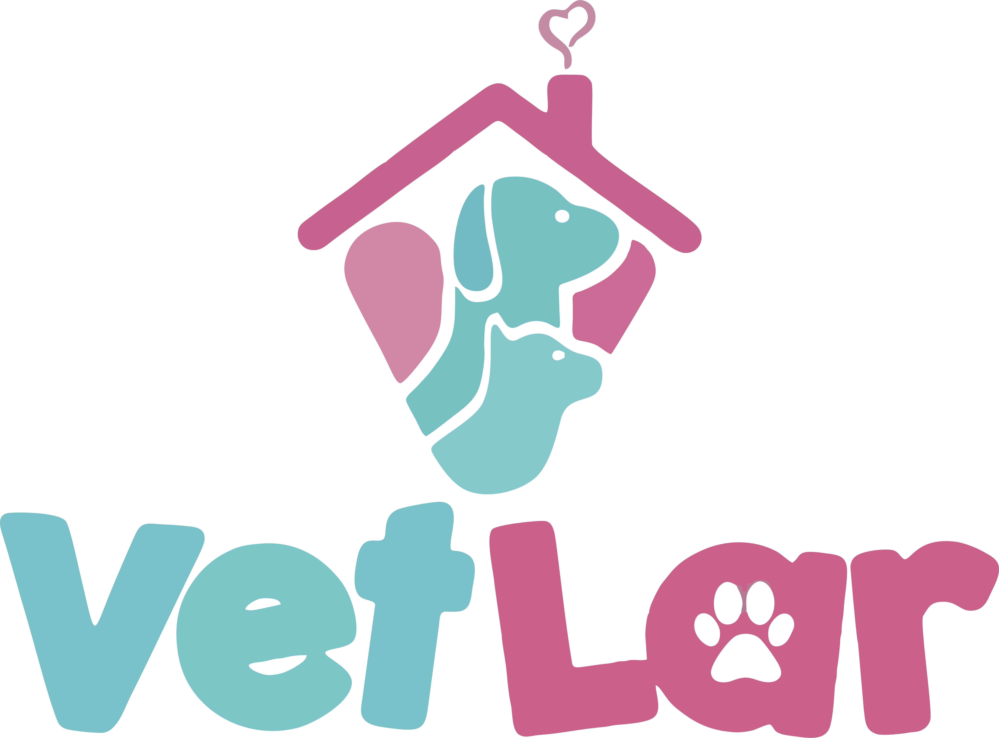
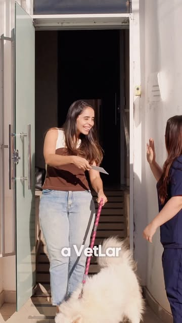
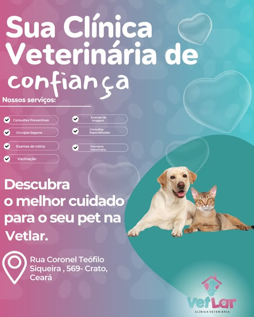

Consulta Veterinária
Avaliação, prevenção e acompanhamento para cada fase da vida.

Agendar consultaPets felizes, tutores tranquilos
Atendimento veterinário completo, exames de rotina e imagem, produtos e acolhimento no Centro do Crato.

Avaliação, prevenção e acompanhamento para cada fase da vida.
Cuidados de higiene e embelezamento para a rotina do pet.
Raio X, ultrassom e suporte diagnóstico via agendamento.
Itens veterinários selecionados para cuidado diário.
Sobre a Vetlar
A Vetlar reúne atendimento veterinário completo, exames de rotina e exames de imagem em uma localização central, com canal direto pelo WhatsApp oficial da clínica.
Como podemos ajudar
Instagram e produtos

Agendamento
O formulário monta uma mensagem pronta para o WhatsApp da Vetlar. É só revisar e enviar.
Tutores felizes
Atendimento excelente, profissionais atenciosos, ambiente limpo e muito cuidado no trato com os pets.
Resumo de avaliações públicas 5.0 em avaliações públicas“Fomos muito bem atendidas. A recepção tirou todas as dúvidas com paciência e os veterinários deram toda atenção.”
Andressa ★★★★★“Clínica excelente, atendimento ótimo e equipe muito atenciosa. Uma das melhores da região.”
Ana Lídia ★★★★★“Profissionais super competentes, com amor e dedicação no cuidado com os pets.”
Luciana ★★★★★“Atendimento, higiene e cuidado impecáveis. A equipe trata os pets com muito carinho.”
Ana Maria ★★★★★“Profissionais qualificados, éticos e ambiente agradável. Atendimento de confiança.”
Ilna ★★★★★Como chegar
R. Cel. Teófilo Siqueira, 569 - Centro, Crato - CE, 63100-010.
Abrir rota


 Vetlar
Vetlar